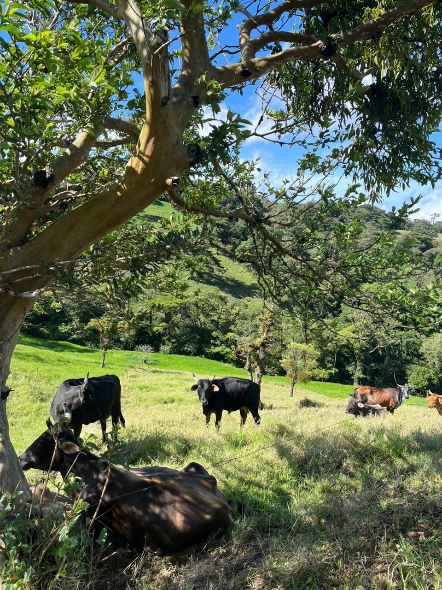

Noticias de la Zona
Mantente informado sobre las novedades, eventos y desarrollos en las comunidades productoras de Tilarán.
Últimas noticias

Paisajes de Tilarán
La región de Tilarán es conocida por sus paisajes montañosos y sus condiciones ideales para la ganadería lechera. Los productores locales aprovechan la riqueza natural y el clima favorable para producir leche de alta calidad.

Comunidades rurales en acción
Las comunidades como Cabeceras de Tilarán, Tronadora y El Dos son el corazón de nuestro proyecto. Aquí, productores de diferentes tamaños trabajan diariamente para abastecer mercados locales y regionales con productos lácteos frescos y de calidad.
Rescate Lácteo: Misión y Visión
Nuestro proyecto busca conectar a productores de zonas rurales de Costa Rica con compradores locales y regionales. Facilitamos ventas, coordinación y apoyo técnico para mejorar la comercialización y resiliencia de los productores.

Producción sostenible
Los productores de la región implementan prácticas sostenibles para garantizar la calidad de la leche y el cuidado del medio ambiente. Con el apoyo de Rescate Lácteo, logran optimizar sus procesos y acceder a mejores mercados.
Conexión con mercados locales
Rescate Lácteo facilita la conexión directa entre productores y compradores, eliminando intermediarios innecesarios. Esto permite mejores precios para productores y productos frescos para compradores.
Apoyo técnico y capacitación
Mediante Rescate Lácteo, los productores acceden a asesoría técnica, información de mercados y capacitación en comercialización. Esto fortalece sus capacidades y mejora su competitividad en el mercado.